2026-10-09 · 本輪驗證版本 13262bce · Windows／Codex 內建瀏覽器
方向仍是「值得細看、思考時也賞心悅目的高質感解謎」。這輪將室內攝影棚反射改為街景反射，補上車身底部的環境遮蔽與紅車接地位置，並實際檢查遊玩、編輯、試玩、存檔、更新和不同螢幕尺寸。檢查發現的問題與未來功能分開列出，避免把設計偏好當成程式錯誤。
反射的限制：這是中央位置的靜態街景探針，沒有逐車動態反射，也沒有光線追蹤；附近車輛、煙霧、風動葉片不會即時映入車窗。輪胎接地仍是輕量陰影近似，沒有加入完整懸吊／碰撞剛體系統。
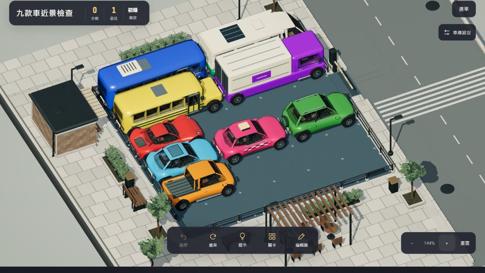
看到初次操作指南，略過後能進入遊戲。選單顯示版本、檢查更新可找到新版。測試中確實發生背景更新自動重開，把編輯器切回遊戲；已修復，後續實測新版停留在等待通知，直到按下更新才重開。程式測試另外涵蓋下載失敗回滾及只清理本遊戲舊快取。
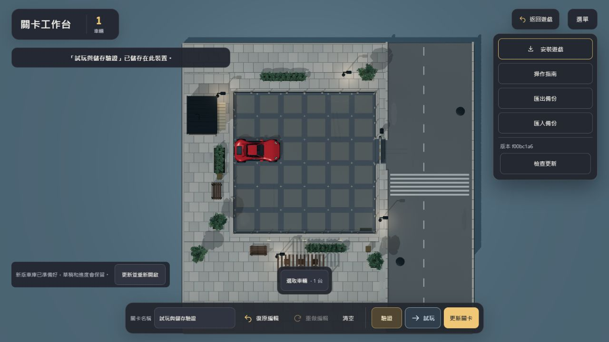
第 1 關使用實際滑鼠拖曳，包含水平／垂直車、一次跨 3 格、復原再移動，共 9 步通關。提示有方向、距離與目的位置框，移車後消失；復原回到 0 步，重走後步數正確。結算顯示最佳 9 步與三星，按下一關可進入第 2 關。這輪觀察到的出庫片段沒有再出現明顯黑色閃爍，但沒有逐幀分析整段動畫，不能保證所有角度都不存在瞬間瑕疵。
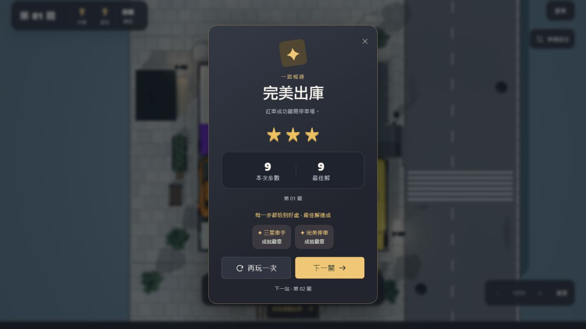
逐一切換日／黃昏／夜景／雨後，未看到新的玻璃霧化或場景整片裁切。夜景仍能辨識車輛色彩與盤面。固定探針能改善環境光一致性，但近看時仍不會出現鄰車的即時倒影；雨後與乾燥的差異在全景中相對細微，後續應按材質建立明確、節制的差異，而不是把整片柏油做成鏡面。
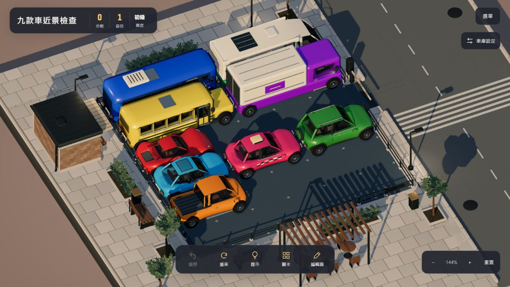
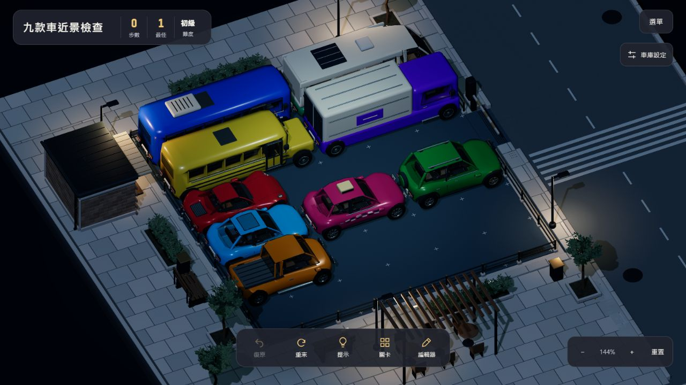
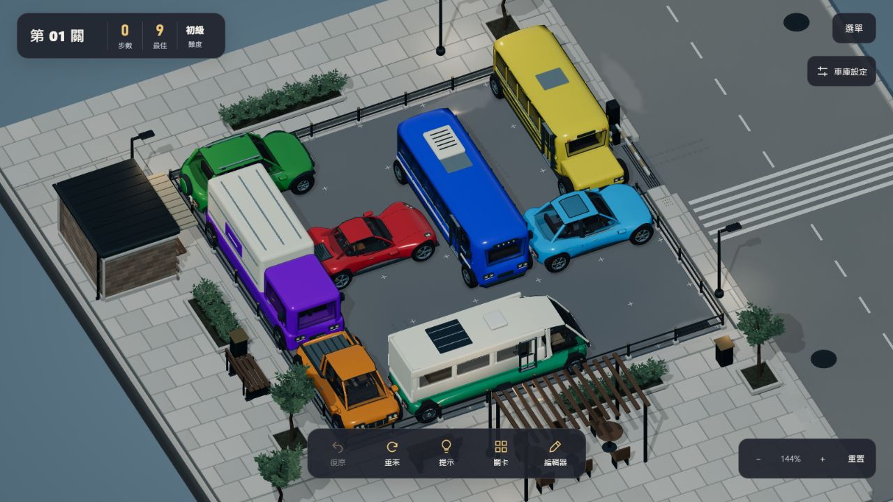
獨立測試關卡放置跑車、小轎車、計程車、越野車、皮卡、校車、城市巴士、露營車與貨車；以展示角及最低俯視角查看車身、玻璃、輪拱、接地與內裝輪廓。車輛排列會互相遮擋，因此這次不是每台車的完整 360 度逐面檢查。沒有將「未看到問題」當成所有模型完全無誤的證明。
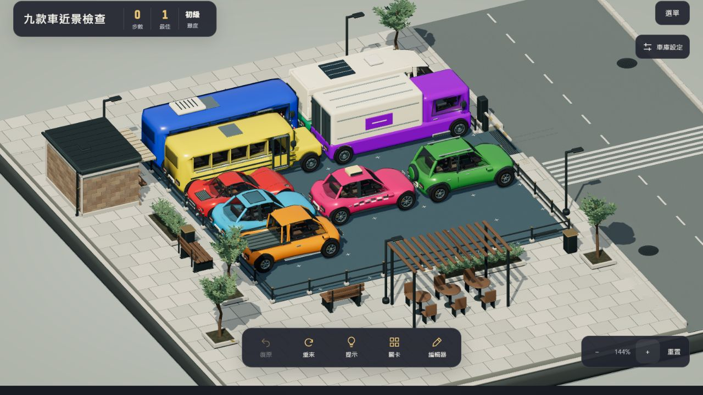
美術下一步宜集中在可見的大結構：擋風玻璃的邊緣密封與反射層次、車門與保險桿接縫、車燈的內部深度、儀表板與腳部空間。小於常用鏡頭數個像素的螺絲、刻字不應優先增加幾何。
進入編輯器是空盤面；在第 1 列放紅車被拒絕；第 3 列重點起點可取消。兩點能自動建立水平 2 格、垂直 2 格及水平 3 格車，復原／重做可恢復車輛。命名後驗證得到「有解、最佳 1 步」，綠色結果框與一般訊息有明顯區別。
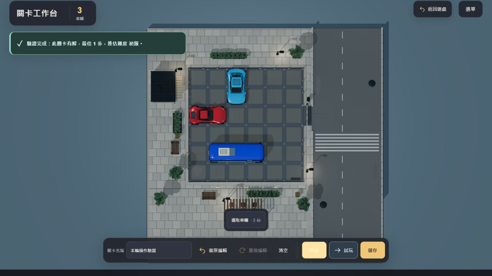
未儲存草稿可直接試玩；通關結算的第二個按鈕是「返回編輯器」，沒有跳到正式關卡選擇。返回後名稱與紅車保留，儲存成功顯示裝置保存回饋，按鈕改為「更新關卡」。我的關卡中能找到保存的測試關卡。
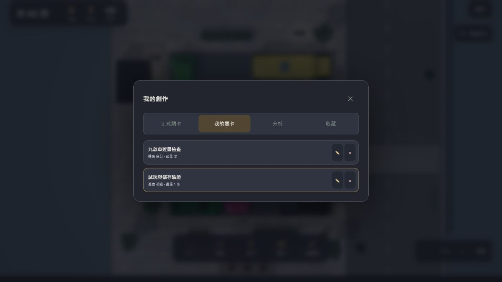
手機尺寸下選中小轎車，展開替換只提供相同 2 格的車型，選計程車後盤面模型與名稱一致。替換完成選單收起。主選單展開後，點空白場外會關閉。這些操作是桌面滑鼠在手機尺寸下執行，並非手機觸控實機測試。
390×844 直向沒有水平頁面溢出，工具列、返回遊戲與保存均可見。844×390 橫向的關卡標題區侵入場景上方，短畫面應採更緊湊的 HUD 與安全留白。手機編輯器的長提示會出現明顯白色原生捲軸。
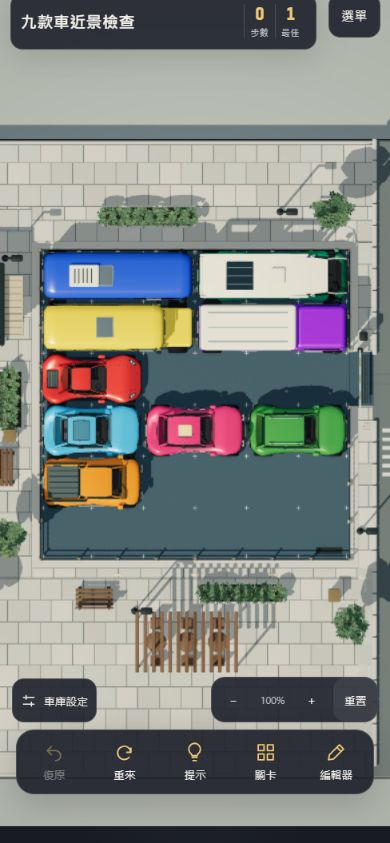
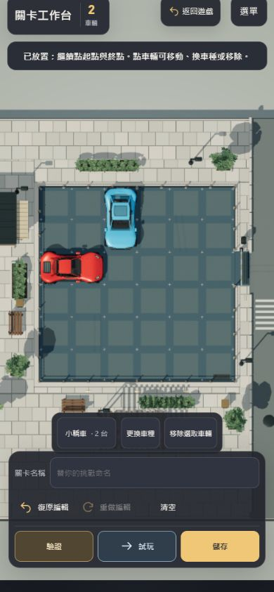
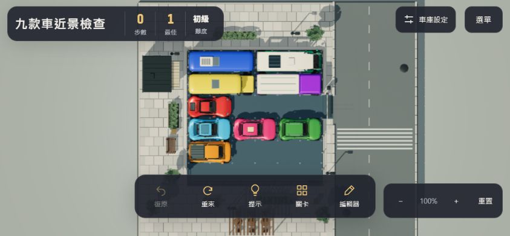
精緻、標準、省電均能切換，省電關閉投影，回到精緻可恢復。本輪首次切換畫質時，後續關閉設定操作曾未立即回應；恢復後操作正常。這可能涉及材質／著色器首次編譯，也可能含測試工具通訊延遲，需要效能錄製確認，不能把工具逾時直接換算成遊戲卡頓秒數。
已知工程負擔：3D 模組約 716 kB（gzip 約 191 kB），10 個 GLB 合計約 13.5 MiB，首次載入目前一次取回全部車型。適合先做壓縮、依關卡載入與背景預熱，再評估 LOD。這輪沒有可靠的連續 GPU 計時／真實手機功耗資料，不提供虛構 FPS 或效能提升百分比。
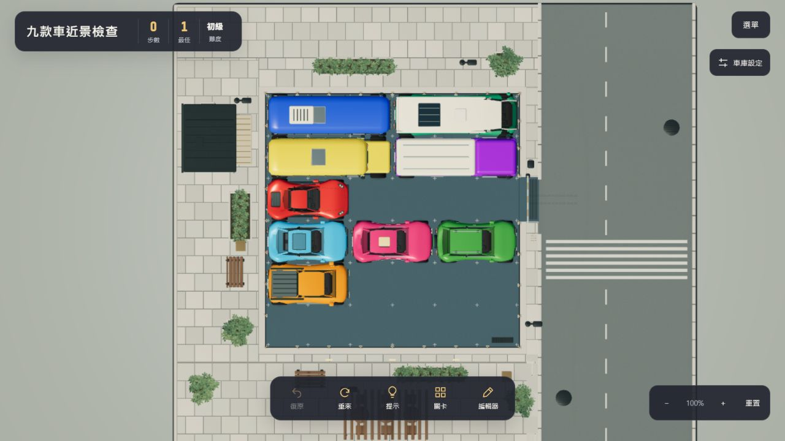
npm test：17 組測試通過，涵蓋移動合法性、模型映射、鏡頭限制、懸吊、車燈、排氣、存檔、編輯器、出庫路線、環境、雨後表面及新反射快取。建置時完成 40 關求解與合法路徑重播。新增 PWA 生命週期檢查驗證等待更新、明確啟用、快取範圍及失敗回滾。最新版測試頁未記錄 JavaScript error；先前渲染器有精度警告，沒有據此判為畫面錯誤。
| 優先 | 發現／狀態 | 方案與驗收 |
|---|---|---|
| P1 已修 | 背景更新打斷編輯器。 | 等待明確更新。已實測等待通知及按下後重開，並補生命週期回歸檢查。 |
| P1 待量測 | 首次畫質切換的反應遲延；成因未定。 | 分別錄製冷／熱切換、拖車、旋轉、雨後與出庫；區分 CPU、GPU、shader 編譯與資源下載。再採背景預熱，避免盲目降低畫質。 |
| P2 | 設定面板仍有舊綠色區塊；白色捲軸不合整體風格。 | 統一炭灰與暖金 token；使用細暗色捲軸。手機提示優先縮短文案／允許高度，不在兩行小框內捲動。 |
| P2 | 首次三星成就通知曾蓋在右上選單與設定區。 | 統一通知佇列與避讓區；通關時可只在結算展示收藏，避免同時兩處提醒。驗收不同長度文案與手機尺寸。 |
| P2 | 未分析的匯入關卡顯示「最佳 步」，中間空白。 | 顯示「尚未分析」或「最佳 — 步」，分析完成再顯示數字；保留未分析／分析中／已分析三種狀態。 |
| P2 | 短橫向畫面的 HUD 會侵入場景上方。 | 低高度模式收斂標題寬度，統計改一行，為盤面配置 HUD 安全區；測試長中文關卡名。 |
| P2 設計 | 進入編輯器照需求清空，但先前草稿的恢復入口不夠明確。 | 維持空盤面預設，另外提供「恢復上次草稿」及一份前稿快照；不要以每次跳確認框打斷操作。 |
| P2 既有回饋 | 放到最大後，手機缺少場外區域可旋轉。 | 保留現有手勢，加入窄幅場外旋轉安全邊，或以雙指短暫停留後旋轉；先小範圍比較，避免和平移／縮放互相搶操作。 |
| P3 美術 | 固定反射無鄰車倒影；大型窗面及輪拱的層次仍可更細。 | 先做窗框、密封條、車燈深度、輪拱內襯與車門接縫。逐車建立正側背及低角度驗收圖，避免新增穿模。 |
| P3 美術 | 街景結構較車輛單純，反覆使用相同家具；全景的雨後差異較細微。 | 增加少量有故事的建築／店面大結構，控制背景對比；分別設定柏油、石材、金屬、車漆的乾濕粗糙度。避免靠巨大水滴或鏡面水坑增加存在感。 |
可增加的玩法：分層提示先指出關鍵阻塞、第二次才給精確移動；通關後提供可拖曳的解題回放；以「自由解出／最佳步數」兩種目標兼顧休閒與解謎玩家；提供可隱藏 HUD 的賞車／攝影模式，善用既有鏡頭與模型。暫不優先多人、排行榜或大規模分享功能，也不加入聲音。
本報告列出本輪看見、重現或從程式確認的疑點，不能保證找出所有問題。仍待真實 iPhone／Android 的安裝、離線、更新、手勢、安全區、長時間效能測試，以及車型逐角度與出庫逐幀驗收。